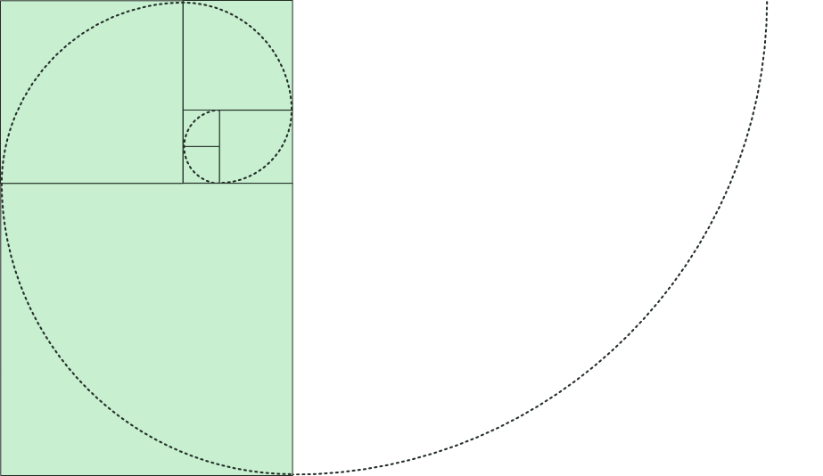

D. A. Schorr
poet | he / him
daschorr1618@proton.me
D. A. Schorr is a high school math teacher who worries about the amount of microplastic in his dog's gut. His poems search for pattern in cacophony, winding their way through nature, playful mathematics, the classroom, and ultimately what it means to act morally in a society that is actively destroying itself and the world. Schorr's poem "Our Son At Sixteen" was nominated for a Pushcart Prize. Together he and the dog live with Schorr's husband, son, and potted avocado trees.
This page was designed and coded by D. A. Schorr, using only HTML and CSS intentionally in order to last. The text is displayed using websafe fonts, specifically the headers in Georgia and the paragraphs in Verdana. The page was last updated 17 October 2026. It has been displayed a number of times greater than one and possibly printed at least twice, but there is really no way to know for sure.